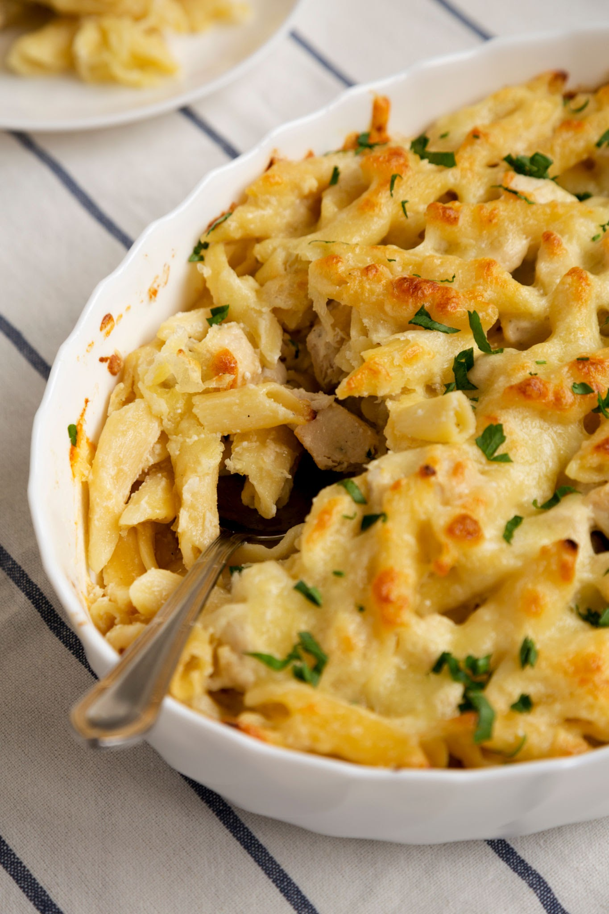

Chicken Alfredo

Description
If you need a luxurious break from tomato-based sauces, this four-cheese chicken alfredo pasta bake delivers pure
indulgence. It features tender bits of pre-cooked chicken breast and tube pasta coated in a silky, home-style
garlic and cream cheese alfredo sauce, resulting in a velvety casserole that will satisfy any cheese lover.
Ingredients
- 1 pound penne or rigatoni pasta
- 2 cups cooked chicken breast, shredded or cubed
- 1 (15 ounce) jar quality Alfredo sauce
- 8 ounces cream cheese, softened
- 2 cups shredded mozzarella cheese, divided
- ½ cup grated Parmesan cheese
- ½ cup shredded Provolone cheese
- 2 cloves garlic, minced
- 1 tablespoon butter
Directions
- Preheat your oven to 350°F (175°C) and lightly grease a 9x13-inch baking dish.
- Cook the pasta in boiling water according to package directions until just al dente, then drain.
- In a saucepan over medium heat, melt the butter and sauté the minced garlic for about 1 minute until
fragrant.
- Stir in the softened cream cheese and Alfredo sauce, whisking gently until completely smooth and melted
together.
- In a large mixing bowl, combine the cooked pasta, cooked chicken pieces, and the warm Alfredo sauce mixture.
- Fold in the Provolone cheese, Parmesan cheese, and half of the mozzarella cheese.
- Pour the pasta mixture into the prepared baking dish and press down gently into an even layer.
- Scatter the remaining 1 cup of mozzarella cheese over the top of the pasta.
- Bake uncovered for 20 minutes until the cheese topping turns a light golden brown and bubbles. Let rest for
5 minutes before serving.